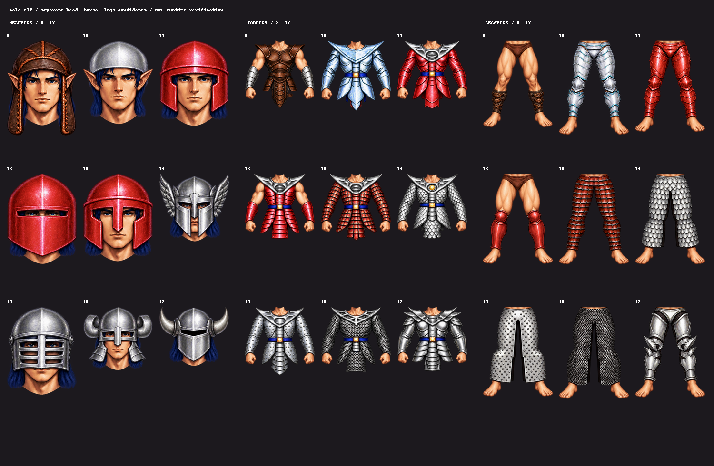

五種體型裝備候選
本頁保存早期獨立部件候選。翼族足部已依原PNG訂正為紅色裸足與三枚白爪；早期爪形足甲不沿用。最新六型遊戲比較及限制見六型接入原型，本頁圖片及原收據保持。
DRAFT：男性精靈、矮人、有翼人物、女性人類及女性精靈，共135款頭／上身／腿部候選。下圖是獨立部件的圖集，尚未完成完整人物合成，也不是遊戲畫面。英文與圖號為驗證標籤。
範圍與下一閘門 · 裁取收據 · 來源與提示 · 已驗人類男性遊戲內切換

17張圖集與第37款裸手修正版依實際透明空隙裁取，135個來源對應及裁取皆已核對。15款原生尺寸低於原著色六倍參考，仍須按最終解剖呈現矩形複核。腰線、握持、翅膀、混搭／卸裝、實際中文頁、F10與v3均待本批接入驗證。
目前隔離遊戲仍只接入人類男性。正式版與Release保持。PNG僅依目前private儲存庫例外保存，未取得公開散布權。